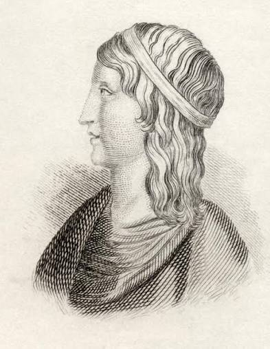
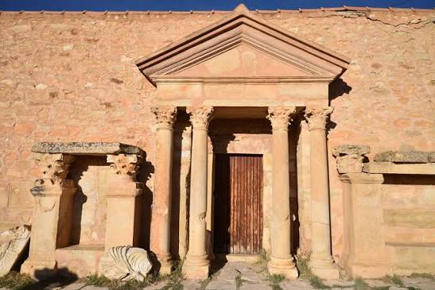
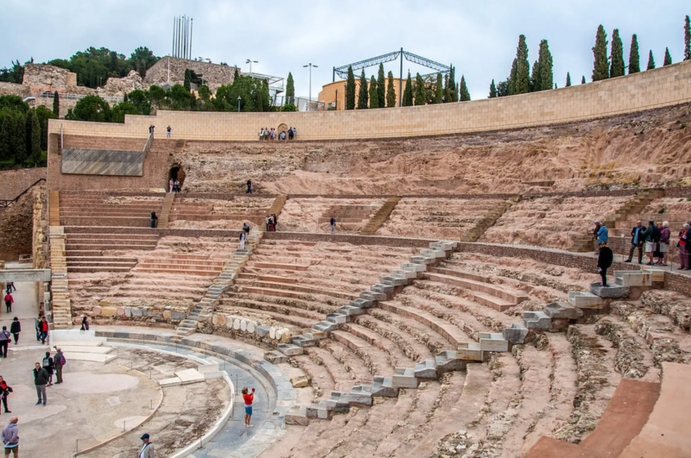
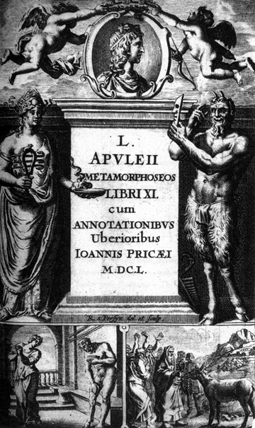
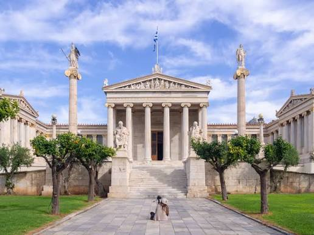
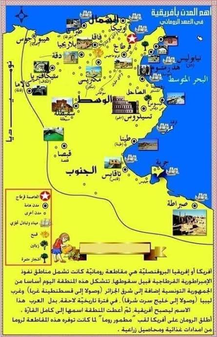

قرطاج وإسهاماتها في الحضارة الرومانية: أبوليوس
مقدمة
شهدت إفريقيا البروقنصلية في القرن الثاني ميلادي ازدهارًا اقتصاديًا وعمرانيًا وثقافيًا، وتألّق فيها عدد من المفكرين والأدباء، ومن أبرزهم أبوليوس صاحب رواية «المسوخ» (الحمار الذهبي).
فمن هو أبوليوس؟ وما هي مكوّنات شخصيته الموسوعية؟ وما هي أبرز إسهاماته الأدبية؟
I إطار العصر: ازدهار إفريقيا البروقنصلية
1. الازدهار الاقتصادي والعمراني
شهد القرن الثاني ميلادي تحول مقاطعة «إفريقيا البروقنصلية» (تونس الحالية وجزء من الجزائر وليبيا) إلى «أهراء روما» بفضل طفرة إنتاج الحبوب والزيتون.
2. قرطاج العاصمة الثقافية
أعاد الرومان بناء قرطاج لتصبح عاصمة المقاطعة، وتحولت إلى منارة علمية وثقافية كبرى في العالم اللاتيني، تنافس روما وأثينا.
II نشأة أبوليوس وتكوينه الموسوعي
1. الأصل والولادة
وُلِد لوسيوس أبوليوس حوالي سنة 124 م في مدينة مادوروس (مداوروش الحالية بسوق أهراس، الجزائر)، وكان ينتمي إلى عائلة ميسورة الحال (والده كان قاضياً).
2. التكوين العلمي المتعدد
- تلقى مبادئ العلوم والآداب الأولى في جامعة قرطاج.
- سافر إلى أثينا لدراسة الفلسفة الأفلاطونية، وإلى روما لتعلم البلاغة الخطابية اللاتينية.
- مكّنه هذا الترحال من اكتساب ثقافة موسوعية جمعت بين الأدب، الفلسفة، الطبيعيات، والخطابة.
III إشعاع أبوليوس في قرطاج وإنتاجه الأدبي
1. الخطيب البارع
استقر أبوليوس في قرطاج وتولى فيها مناصب دينية رفيعة (كاهن أكبر للمدينة). واشتهر بإلقاء محاضراته وخطبه البليغة على مسرح قرطاج أمام جمهور غفير باللغتين اللاتينية والإغريقية.
2. رواية المسوخ (الحمار الذهبي)
تعدّ أهم إنجازاته، وهي أول رواية متكاملة في تاريخ الأدب اللاتيني تصلنا كاملة.
أ. أسلوبها
جمع فيها بين الخيال الطريف والتصوير الدقيق للواقع الاجتماعي.
ب. أبعادها
حملت نقداً لاذعاً للمجتمع الروماني وسلوكيات البشر، وعكست الثقافة الهجينة (الأفريقية-الرومانية) التي تميز بها المثقف القرطاجي.
خاتمة
مثّل أبوليوس نموذجًا للمثقف الموسوعي في إفريقيا البروقنصلية الرومانية، إذ جمع بين الفلسفة والخطابة والأدب، وخلّد اسمه برواية «المسوخ» (الحمار الذهبي) التي تُعدّ أول رواية متكاملة في الأدب اللاتيني.
📖 تعريفات
👤 شخصيات
- أبوليوس (لوسيوس أبوليوس): مفكر وأديب وخطيب من إفريقيا البروقنصلية، وُلِد حوالي سنة 124 م في مادوروس (مداوروش الحالية بسوق أهراس، الجزائر) من عائلة ميسورة الحال. تلقى تكوينه الأول بجامعة قرطاج، ثم سافر إلى أثينا لدراسة الفلسفة الأفلاطونية وإلى روما لتعلم البلاغة اللاتينية. استقر في قرطاج وتولى مناصب دينية رفيعة (كاهن أكبر للمدينة)، واشتهر بإلقاء محاضراته وخطبه البليغة على مسرح قرطاج باللغتين اللاتينية والإغريقية. من أشهر إنجازاته رواية «المسوخ» (الحمار الذهبي) وهي أول رواية متكاملة في الأدب اللاتيني.
- أفلاطون: فيلسوف يوناني، درس أبوليوس فلسفته الأفلاطونية في أثينا.
🌍 دول ومناطق
- مادوروس (مداوروش): مدينة تقع في سوق أهراس الحالية بالجزائر، وهي مسقط رأس أبوليوس حوالي سنة 124 م.
- قرطاج: عاصمة إفريقيا البروقنصلية الرومانية، تحولت إلى منارة علمية وثقافية كبرى في العالم اللاتيني تنافس روما وأثينا، وفي جامعتها تلقى أبوليوس تكوينه الأول، وفيها استقر وتولى مناصب دينية رفيعة واشتهر بخطبه البليغة.
- أفريقيا البروقنصلية: مقاطعة رومانية تشمل تونس الحالية وجزءًا من الجزائر وليبيا، تحولت في القرن الثاني ميلادي إلى «أهراء روما» بفضل طفرة إنتاج الحبوب والزيتون.
- أثينا: مدينة يونانية سافر إليها أبوليوس لدراسة الفلسفة الأفلاطونية.
- روما: سافر إليها أبوليوس لتعلم البلاغة الخطابية اللاتينية، وهي أحد أقطاب الثقافة اللاتينية التي نافستها قرطاج في تلك الفترة.
📅 سنوات وفترات
- حوالي 124م: سنة ولادة أبوليوس بمدينة مادوروس (مداوروش).
- القرن الثاني ميلادي: القرن الذي شهد ازدهار إفريقيا البروقنصلية اقتصاديًا وعمرانيًا وثقافيًا، وفيه تألّق أبوليوس.
📌 أخرى
- أهراء روما: لقب أُطلق على إفريقيا البروقنصلية في القرن الثاني ميلادي بفضل طفرة إنتاج الحبوب والزيتون، إذ أصبحت المزود الرئيسي لروما.
- رواية المسوخ (الحمار الذهبي): أهم إنجازات أبوليوس، وهي أول رواية متكاملة في تاريخ الأدب اللاتيني تصلنا كاملة. جمعت بين الخيال الطريف والتصوير الدقيق للواقع الاجتماعي، وحملت نقداً لاذعاً للمجتمع الروماني وسلوكيات البشر، وعكست الثقافة الهجينة (الأفريقية-الرومانية) التي تميز بها المثقف القرطاجي.
- الفلسفة الأفلاطونية: فلسفة الفيلسوف اليوناني أفلاطون، سافر أبوليوس إلى أثينا لدراستها.
- البلاغة الخطابية اللاتينية: فنّ الخطابة باللغة اللاتينية، سافر أبوليوس إلى روما لتعلمه.
- الثقافة الهجينة (الأفريقية-الرومانية): ثقافة مزيج بين الموروث الأفريقي والموروث الروماني، تميّز بها المثقف القرطاجي في العهد الروماني، وعكستها رواية «المسوخ».
🗺️ خرائط ومعطيات مصورة





